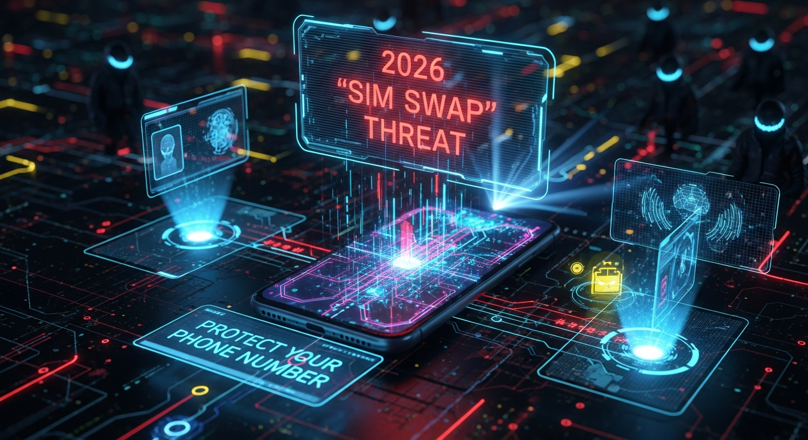

The digital frontier, while offering unparalleled convenience and connectivity, also harbors an ever-evolving ecosystem of threats. Among the most insidious and rapidly escalating dangers is the SIM swap attack, a sophisticated form of identity theft that weaponizes your very phone number against you. While this threat has been simmering for years, the trajectory of digital reliance, coupled with the increasing value of a single phone number as a master key to our online lives, points to a critical juncture around 2026. This isn't merely a prediction; it's an extrapolation based on current trends in cybercrime, the rollout of advanced telecommunications infrastructure like 5G, and the deepening integration of our personal identities with our mobile devices. Protecting your phone number today is not merely a recommendation; it is an urgent imperative to safeguard your financial stability, privacy, and digital existence.
A SIM swap, or SIM hijacking, is a deceptive maneuver where criminals trick your mobile carrier into transferring your phone number to a new SIM card under their control. Once they possess your number, they gain access to a treasure trove of your digital life. This seemingly simple act becomes a devastating gateway to resetting passwords for your email, banking apps, social media, cryptocurrency accounts, and virtually any service that uses SMS for two-factor authentication (2FA) or password recovery. The consequences are dire: drained bank accounts, stolen cryptocurrency, compromised personal data, identity theft, and severe reputational damage. The elegance of the attack lies in its exploitation of a fundamental trust mechanism – your phone number – which has inadvertently become a universal authenticator in the digital age.
The year 2026 emerges as a critical focal point for several compelling reasons. Firstly, the relentless march of digital transformation means that by 2026, an even greater proportion of our lives will be inextricably linked to our mobile devices. From smart home controls and vehicle access to advanced digital payment systems and decentralized identity solutions, the phone number's role as a primary identifier and authenticator will only intensify. This increased utility translates directly into a higher value target for criminals. Secondly, the widespread deployment of 5G networks, while offering unprecedented speeds and connectivity, also expands the attack surface. The complexity of 5G infrastructure, coupled with the proliferation of IoT devices that often rely on simple authentication tied to mobile numbers, could introduce new vulnerabilities or amplify existing ones if not meticulously secured. While 5G itself is designed with enhanced security features, the sheer scale and interwoven nature of the ecosystem it enables present novel challenges for carriers and users alike. The window between the advanced capabilities of 5G and the full maturity of robust, standardized security protocols across all service providers and third-party applications could create ripe conditions for exploitation.
Furthermore, the current regulatory landscape often struggles to keep pace with technological advancements and evolving cyber threats. While some regions are implementing stricter rules for carriers regarding identity verification for SIM changes, these measures are not universally adopted or uniformly enforced. By 2026, a fragmented regulatory environment could mean that while some carriers offer advanced protections, others remain vulnerable, creating weak links that attackers will relentlessly seek out. The sophistication of social engineering tactics is also continually evolving. Attackers are becoming more adept at phishing, smishing, and pretexting, leveraging publicly available information and data breaches to craft highly convincing impersonations. This means that even with improved carrier security, the human element remains a significant vulnerability. The convergence of these factors – increased digital reliance, expanded network complexity, potential regulatory gaps, and advanced social engineering – paints a stark picture of a heightened SIM swap threat environment by 2026, making proactive defense not just smart, but essential for digital survival.
Understanding how a SIM swap attack unfolds is crucial for developing an effective defense strategy. The process typically begins with the attacker gathering personal identifiable information (PII) about their target. This PII can be acquired through various nefarious means, including phishing scams where victims are tricked into revealing sensitive data, malware that scrapes information from compromised devices, or, most commonly, through data breaches where vast quantities of personal data are leaked and sold on the dark web. Social media profiles, often replete with birthdates, family names, pet names, and even past addresses, also serve as fertile ground for attackers to piece together a convincing profile.
Once armed with sufficient PII, the attacker moves to the second phase: impersonation. They contact the victim's mobile carrier, often posing as the legitimate account holder. This contact might occur via phone, online chat, or even in person at a retail store. The attacker employs sophisticated social engineering tactics, using the stolen PII to answer security questions, feign distress over a "lost" or "damaged" phone, and ultimately convince a customer service representative to transfer the victim's phone number to a new SIM card that the attacker controls. This is where the vulnerabilities in carrier authentication processes become glaringly apparent. Many carriers still rely on relatively weak knowledge-based authentication (KBA), asking questions whose answers can often be found through public records, social media, or data breaches. Some less scrupulous or inadequately trained employees can also be swayed by persuasive attackers, or, in rarer but more alarming cases, be complicit in the fraud for financial gain, representing an insider threat.
The moment the SIM swap is successful, the victim's phone loses service, often without immediate explanation. Simultaneously, the attacker's device, now equipped with the victim's phone number, begins receiving all incoming calls and text messages. This is the critical window of opportunity. The attacker immediately targets the victim’s most valuable online accounts, starting with email, banking, and cryptocurrency exchanges. They initiate password reset requests, and because the SMS-based 2FA codes or password reset links are now routed to their device, they can effortlessly bypass security measures. Within minutes, or even seconds, they can gain full control over accounts, transfer funds, empty digital wallets, and lock the legitimate user out of their own digital life. The speed and stealth of this final stage make detection and intervention incredibly difficult for the victim, who may only realize what has happened hours later when they attempt to use their phone or access an account and find themselves locked out. The entire process hinges on exploiting the weakest link – often the human element at the carrier level, combined with the widespread reliance on phone numbers for authentication across the digital ecosystem.
Protecting your phone number from a SIM swap attack requires a multi-layered, proactive approach that extends beyond merely reacting to threats. The first and arguably most critical step involves securing your mobile carrier account itself. Contact your carrier immediately and request that they add a unique, strong PIN or password to your account. This should be distinct from any other password you use and ideally not easily guessable from publicly available information. Inquire about any additional security features they offer, such as a "port freeze" or "SIM lock," which prevents your number from being transferred without your explicit, in-person verification or a specific, complex code. Regularly review your carrier account settings and activity logs for any suspicious changes or access attempts.
Beyond carrier-specific measures, a robust personal cybersecurity hygiene is paramount. Begin by implementing strong, unique passwords for every single online account, especially for your email, banking, social media, and any cryptocurrency platforms. A password manager is an invaluable tool for generating and securely storing these complex passwords, eliminating the need to remember them all and significantly reducing the risk of credential stuffing attacks. Furthermore, be incredibly cautious about sharing personal information online. Review privacy settings on all social media platforms, limiting who can see your birthdate, phone number, address, and family details. Attackers often glean crucial PII from seemingly innocuous posts, which they then use to impersonate you. Avoid participating in online quizzes or surveys that ask for information like your first pet's name, mother's maiden name, or high school mascot, as these are frequently used as security questions.
Another crucial proactive measure is to minimize your reliance on SMS-based two-factor authentication (2FA). While SMS 2FA is better than no 2FA, it is the primary vulnerability exploited in SIM swap attacks. Wherever possible, switch to more secure forms of multi-factor authentication, such as authenticator apps (e.g., Google Authenticator, Authy, Microsoft Authenticator) or, ideally, hardware security keys (e.g., YubiKey, Google Titan). These methods generate time-sensitive codes or require a physical token, making them significantly harder for an attacker to intercept or bypass. Additionally, be vigilant against phishing and smishing attempts. Never click on suspicious links in emails or text messages, and always verify the sender before providing any personal information. If you receive a call claiming to be from your bank or carrier and asking for sensitive details, hang up and call them back using the official number listed on their website or your billing statement. Finally, regularly monitor your financial accounts and credit reports for any unusual activity. Services like free credit monitoring or identity theft protection can alert you to suspicious new accounts or inquiries, allowing you to react swiftly to potential fraud before it escalates. Proactive vigilance is your strongest shield against this evolving threat.
In the escalating battle against SIM swap attacks, leveraging the right tools and technologies can significantly fortify your digital defenses. The cornerstone of this defense is moving beyond SMS-based two-factor authentication (2FA). While convenient, SMS 2FA is inherently vulnerable to SIM swaps because the authentication codes are sent directly to your phone number, which attackers aim to control. Instead, prioritize authenticator apps such as Google Authenticator, Authy, or Microsoft Authenticator. These applications generate time-based one-time passwords (TOTP) directly on your device, independent of your phone number. When logging into a service, you simply open the app and enter the constantly refreshing code. This method ensures that even if an attacker gains control of your phone number, they cannot access the authentication codes generated by your app, as they reside on your physical device or a secure cloud backup (in the case of Authy).
For the highest level of security, particularly for critical accounts like email, banking, and cryptocurrency, consider adopting hardware security keys. Devices like YubiKey or Google Titan Keys support FIDO2/WebAuthn standards and provide phishing-resistant multi-factor authentication. When you log in, you physically insert the key into a USB port or tap it against your NFC-enabled phone, then press a button to confirm your identity. This physical interaction makes it virtually impossible for remote attackers to bypass, as they would need physical possession of your specific key. Hardware keys are immune to SIM swaps, phishing, and even most malware, making them an indispensable tool for securing your most sensitive digital assets.
Secure your digital wealth with the world's most trusted hardware wallets.
GET YOUR WALLET NOWAnother powerful technological defense is the adoption of eSIM technology. An eSIM (embedded SIM) is a digital SIM that allows you to activate a cellular plan from your carrier without needing a physical SIM card. While not a complete panacea, eSIMs significantly reduce the risk of physical SIM card theft and unauthorized swaps. Since there's no physical card to remove or swap, an attacker would need to gain access to your device and your carrier account credentials to transfer your eSIM profile, adding layers of complexity to their attack. Furthermore, some eSIM implementations offer enhanced security features that can make remote provisioning more secure. Migrating to an eSIM-compatible device and plan, if available through your carrier, adds a robust layer of protection against the traditional physical swap methods.
Password managers are also indispensable. Tools like LastPass, 1Password, Bitwarden, or Dashlane do more than just store your passwords; they generate strong, unique, and complex passwords for every single one of your online accounts. This eliminates password reuse, a common vulnerability exploited by attackers, and ensures that even if one service is breached, your other accounts remain secure. Many password managers also offer built-in security auditing features, alerting you to weak or reused passwords and prompting you to update them. Finally, consider subscribing to an identity theft protection service. Services from companies like LifeLock, IdentityForce, or Experian IdentityWorks continuously monitor your credit, public records, and the dark web for signs of fraudulent activity, including unauthorized account openings or suspicious inquiries. These services can provide early warnings of a potential SIM swap or subsequent identity theft, allowing you to react swiftly and mitigate damages before they become catastrophic. Integrating these tools into your daily digital routine transforms your phone number from a vulnerability into a fortified asset.
Despite implementing the strongest preventative measures, a determined and sophisticated attacker might still attempt a SIM swap. Recognizing the signs and acting swiftly is paramount to minimizing damage. The most immediate and obvious indicator of a SIM swap is a sudden and unexplained loss of cellular service on your phone. This means no calls, texts, or mobile data, even in areas where you normally have strong reception. Other warning signs include receiving suspicious notifications from your carrier about account changes you didn't authorize, or alerts from banks or online services about password resets or login attempts that you did not initiate. If you experience any of these symptoms, do not delay – every second counts.
Your first and most critical step is to immediately contact your mobile carrier. Use an alternate phone (a friend's, a landline, or a VoIP service) to call their fraud department or customer service line. Inform them that you suspect a SIM swap and that your phone number may have been compromised. Request that they immediately freeze your account to prevent any further unauthorized changes and investigate the recent activity. Be prepared to verify your identity using methods beyond what an attacker might know, such as a strong account PIN or a pre-established secret question. After securing your phone number, your next priority is to secure your most sensitive online accounts. Use a computer or another device with a secure internet connection to log into your email, banking, social media, and cryptocurrency accounts. Change all your passwords immediately, prioritizing accounts that use your phone number for recovery or 2FA. If you use app-based authenticators, ensure they are still linked to your legitimate accounts. If an attacker has already gained access to an account, attempt to regain control using the service's recovery procedures and report the unauthorized access to the platform.
Concurrently, contact your financial institutions – banks, credit card companies, and investment firms – to alert them of potential fraud. Explain that your phone number has been compromised and that fraudulent transactions may occur. Request that they monitor your accounts closely and consider freezing or flagging any suspicious activity. It is also wise to place a fraud alert or credit freeze with all three major credit bureaus (Equifax, Experian, and TransUnion). A fraud alert makes it harder for criminals to open new lines of credit in your name, while a credit freeze completely restricts access to your credit report, making it nearly impossible for new accounts to be opened. Document every step you take: the dates and times of calls, the names of representatives you speak with, and any reference numbers provided. This documentation will be invaluable for reporting the crime to law enforcement. File a report with the local police department and the FBI’s Internet Crime Complaint Center (IC3). While these reports may not always lead to immediate arrests, they create an official record of the crime, which can be essential for disputing fraudulent charges, recovering losses, and assisting in broader investigations against cybercrime rings. Finally, after the immediate crisis is managed, engage in long-term recovery and monitoring. This includes regularly checking your credit reports, monitoring all online accounts for lingering signs of compromise, and remaining vigilant for any further attempts at identity theft. The aftermath of a SIM swap can be extensive, requiring persistent effort to fully restore your digital security and financial health.
While protecting your phone number is a critical defense against SIM swaps, a truly resilient security posture demands a holistic approach to your entire digital identity. The phone number, in essence, acts as a master key to a vast network of interconnected accounts. Therefore, securing just the phone is insufficient if the doors it unlocks remain vulnerable. The journey towards comprehensive digital identity protection begins with a fundamental understanding that every online account – from your primary email to obscure forum logins – contributes to your overall risk profile. A breach in one seemingly minor account can provide attackers with the leverage or information needed to compromise more critical ones. This interconnectedness necessitates a consistent, high level of security across all platforms.
Your email account, in particular, often serves as the central hub for password resets and critical communications. If an attacker gains control of your email, they can swiftly pivot to taking over numerous other services. Therefore, securing your primary email with the strongest possible multi-factor authentication (preferably a hardware security key or authenticator app, never SMS) is non-negotiable. Similarly, banking, investment, and cryptocurrency accounts demand the highest level of protection. Many financial institutions now offer advanced security features beyond traditional passwords, such as biometric authentication, unique security questions, and even physical tokens. Embrace these options wholeheartedly. Furthermore, social media profiles, while seemingly innocuous, can be rich sources of personal identifiable information (PII) that attackers exploit for social engineering. Regularly audit your privacy settings, limit public access to sensitive details, and be wary of what you share online. Every piece of information an attacker gathers makes their impersonation more convincing.
A crucial, yet often overlooked, aspect of holistic protection is educating your family and close contacts. Attackers frequently leverage information from a victim’s network to build a more comprehensive profile or even to execute secondary social engineering attacks. Teach family members about the dangers of phishing, smishing, and pretexting. Explain why they should never share personal information with unsolicited callers or respond to suspicious messages. Encourage them to adopt similar security practices, particularly strong passwords and multi-factor authentication, to prevent them from becoming an unwitting weak link in your security chain. Beyond individual account security, consider the broader threat landscape. This includes being vigilant against malware, which can compromise devices and steal credentials, and securing your home network with strong Wi-Fi passwords and updated router firmware. As smart home devices and other IoT gadgets become more prevalent, ensure they are also secured with unique passwords and kept updated, as they too can represent potential entry points for attackers seeking to gather information or gain network access.
Looking ahead, the evolution of digital identity protection points towards even more robust solutions. Biometric authentication (fingerprint, facial recognition) is becoming more widespread and, when implemented correctly, offers a convenient and secure alternative to passwords. Decentralized identity solutions, leveraging blockchain technology, promise to give individuals greater control over their personal data, reducing reliance on centralized entities that can be targeted. While these technologies are still maturing, staying informed about their development can help you future-proof your digital identity. Ultimately, holistic protection is not a one-time setup but an ongoing commitment to vigilance, education, and continuous adaptation to the ever-changing tactics of cybercriminals. It’s about building a comprehensive fortress around your entire digital life, not just a single door.
The looming... and implement these strategies to ensure long-term success.
In summary, staying ahead of these trends is the key to business longevity and security. By following this guide, you maximize your growth and ensure a stable digital future.
Don't wait for the headlines. Our Private Telegram Channel delivers real-time AI security updates and digital wealth strategies before they go viral. Stay protected. Stay ahead.
⚡ JOIN THE 1% NOW